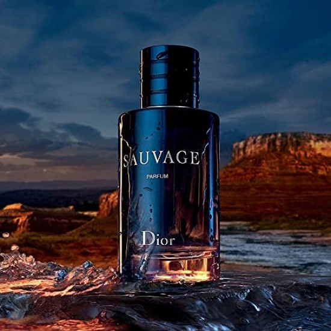
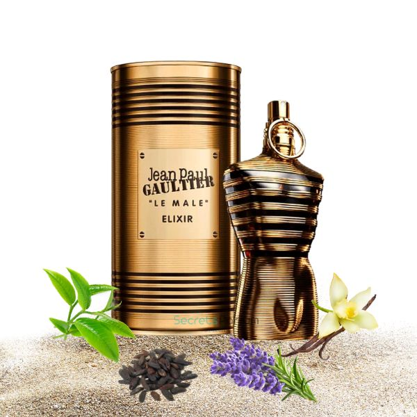

Designer Parfümök
- A designer parfümök olyan prémium illatok, amelyeket híres divatházak és
parfümőrök alkotnak, és amelyek a luxus, elegancia és minőség szimbólumai.
- Ezek a parfümök a még megfizethető kategóriába tartoznak.
- Ilyen márkák pl.: Dior, Giorgio Armani, Versace stb.
- Áraik 30-50 ezer forint körül mozognak.
Dior Sauvage
- Világon a leghíresebb illat
- Egész évszakra ájánlott
- Egy friss fűszeres férfias illat
Illatjegyek:
- Fej jegyek:bergamott
- Szív jegy:vanília
- Az illat fajtája:aromás, fougere

Jean Paul Gaultier Le male elixir
- Leghíresebb téli parfüm
- Tökéletes használat bulikra és randikra
- Egy meleg édes illat
Illatjegyek:
- Fej jegy: levendula
- Szív jegy: tonkabab
- Alap jegy:benzoin
